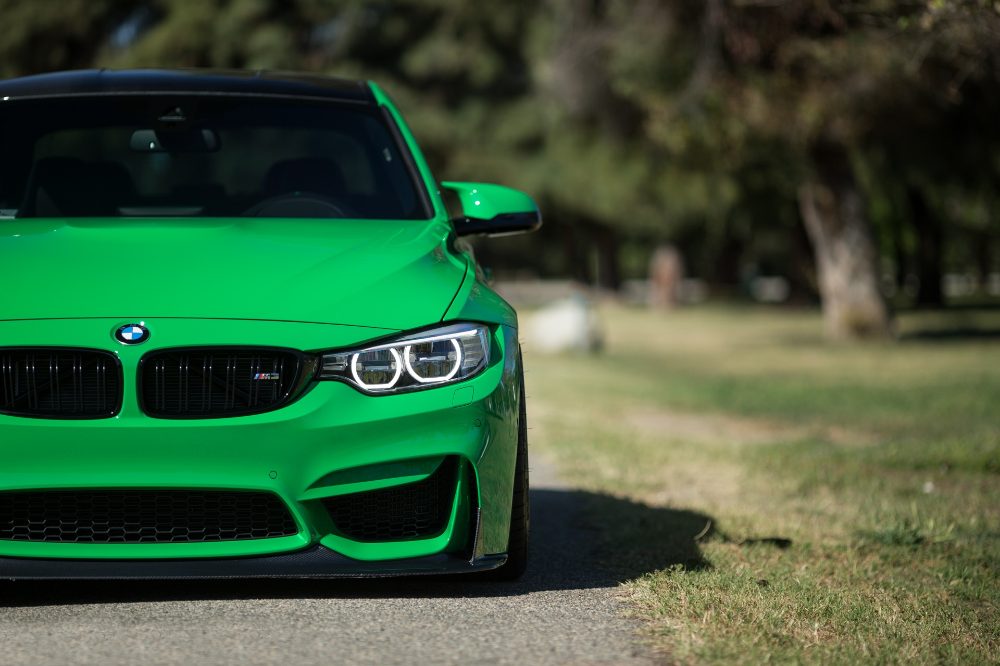

MY BIO
ABOUT ME
I am a very big fan of cars which I have just got interested in very recently. The reason I have such as passion for this is that
mainly most of my family and friends have been interested in this so always being around them and their passion
has caught my attention, and I have since then just picked it up from there. As I really have deep interest in this i thought will try something
myself, so what I have done is bought a Audi S3 which i am doing a project on and would like to make it into a 8P RS3 replica.
